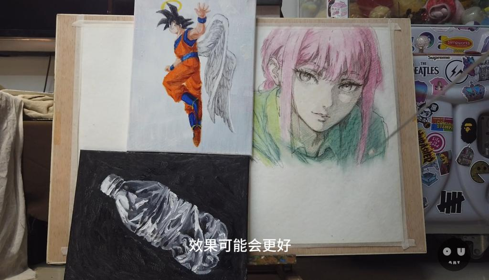
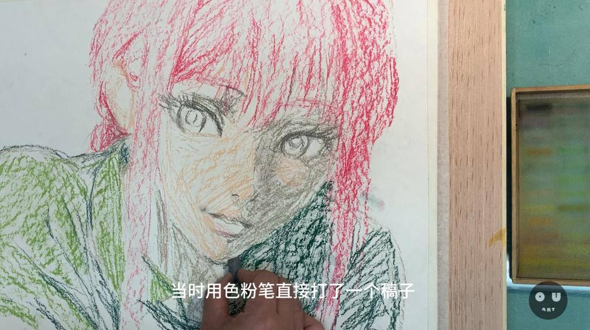
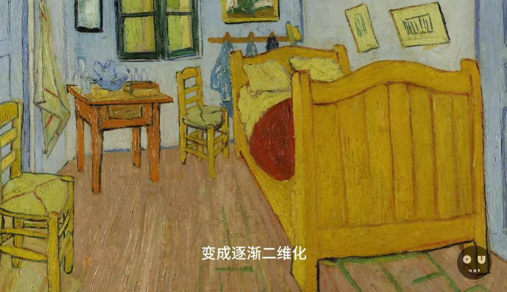
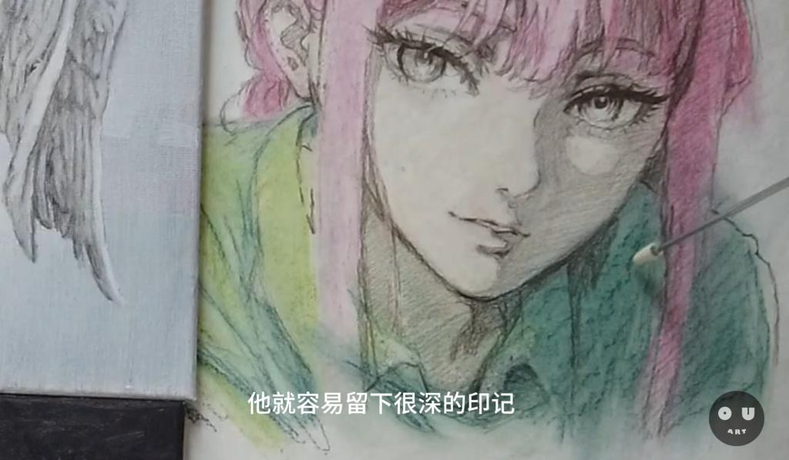

公开课
三重探索：色彩、线条与材料在绘画实践中的融合
我想分享最近完成的三幅作品背后的创作过程和所蕴含的思考。这三幅作品分别采用了不同的材料和技术，每一幅都代表了一种探索和实验的过程，反映了我对绘画技法、材料选择以及艺术创作意义的持续思考。

色粉笔的实验：寻找“够用”的界限
在第一幅作品中，我使用色粉笔直接打稿并添加了一些色彩。这个过程是一个对色粉在绘画中作用的探索，尝试理解在整个绘画过程中，包括画底和最终呈现样子，色粉能起到的作用。我发现，达到了我所预期的效果，“够用”就好。这反映了一个简单但重要的原则：在艺术创作中，技术和材料的选择应该服务于表达的需求，而非过度追求技术本身。

勾线与形式：从三维到二维的视觉转换
第二幅作品聚焦于勾线过程，使用棕色彩铅来画出人物线条，探索物体和物体之间、形与形之间、颜色与颜色之间的界限。这与传统油画中尽可能去除线条的做法形成对比，引出了关于线条在视觉表达中角色的思考。线条，作为一种虚构的元素，帮助我们理解和解读视觉图像，但在现实观察中，物体之间并无明显线条。这引发了关于艺术家如何选择表现手法来逼近或远离现实的讨论。

材料与技法的实验：探索兼容性和表现力
第三幅作品则是一个纯粹的技法和材料实验，旨在探索不同材料之间的兼容性及其对最终效果的影响。通过在素描和水彩纸上先施加色彩再提炼线条的逆向工作流程，我发现即使是相反的过程，也能达到相似的视觉效果。这次实验不仅是技术上的尝试，也是对材料选择和组合可能性的探索。

总结
这三幅作品，从技法的练习到个人对过去的回忆，再到纯粹的材料和技法实验，每一步都充满了探索和发现。它们各自讲述了一个关于创作过程、材料选择和艺术表达的故事。我希望通过这些作品和所进行的实验，能激发更多艺术家对自己所使用的技法和材料进行思考和探索，找到最适合自己表达需求的创作方式。
视频地址：线条怎么用|绘画创作思路|边缘线|个人情感表达|色粉笔使用|绘画创作思路|真实效果追求|技术练习与实验|创作动机与意义_哔哩哔哩_bilibili